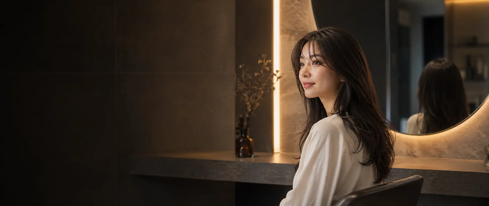
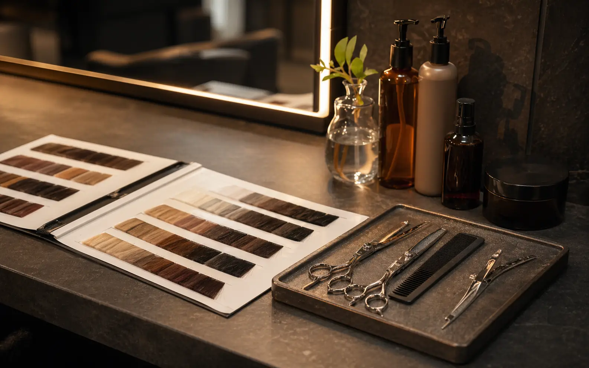

似合わせカット
骨格と毛量を見ながら、乾かすだけで決まるラインへ。
¥6,600
Private hair atelier
骨格・髪質・ライフスタイルを読み解き、翌朝も美しくまとまるヘアデザインへ。大人女性のための完全予約制サロンです。


Hair diagnosis
顔まわり、毛流れ、退色の癖まで丁寧に確認し、上品に見える長さ・色・質感を組み立てます。
前髪、サイド、耳かけの見え方まで計算し、写真でも実物でも美しい印象へ。
肌色に合わせたニュアンスカラーで、派手すぎず印象に残る髪色を提案します。
トリートメントを施術ではなく設計として扱い、毎日の扱いやすさを重視します。
髪の履歴と理想の印象を丁寧に共有。
長さ、色、質感をビジュアルで確認。
負担を抑えながら美しい仕上がりへ。
自宅での乾かし方までお伝えします。
「上品」「予約したい」「自分に合いそう」が一瞬で伝わる美容室サイトに。
サロンの単価感と安心感を同時に見せます。
閲覧者の温度感を逃さず問い合わせにつなげます。